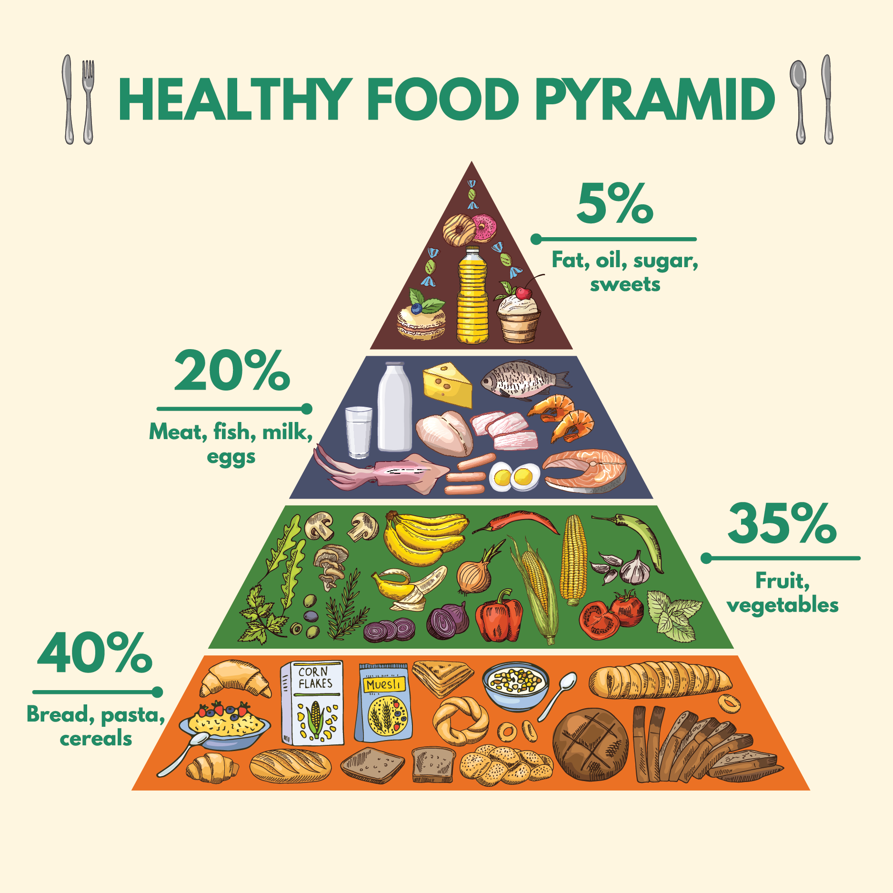

Proper Diet
Eating a healthy diet is not about strict limitations, staying unrealistically thin, or depriving yourself of the foods you love. Rather, it’s about feeling great, having more energy, improving your health, and boosting your mood.
Build Healthy Eating Habits
- Eat a variety of vegetables, especially dark green, red, and orange vegetables (3 or more servings a day).
- Eat a variety of fruits (2 or more servings a day).
- Eat whole-grain, high-fiber breads and cereals (3 to 6 servings a day). Reduce or eliminate refined or processed carbohydrates; most of the grains in your diet should be whole grains.
- Drink fat-free or low-fat milk and eat low-fat dairy products.
- Choose from a variety of low-fat sources of protein — including eggs, beans, poultry without skin, seafood, lean meats, unsalted nuts, seeds, and soy products. If you eat meat, eat white meat at least four times more often than red meat.
- Reduce intake of saturated fats and trans-fats (such as partially hydrogenated oil) as much as possible.
- Use vegetable oils (like olive or canola oil) instead of solid fats.
- Reduce daily intake of salt or sodium. Reduce to less than 1,500 mg. per day if you are older than 50, or have hypertension, diabetes or chronic kidney disease.
- Restrict or eliminate "junk food" — foods that contain refined white flour, solid fats or trans fats, added sugars, and are high in sodium.
- Restrict or eliminate sodas and other sugar-added drinks that are high in calories and contain few or no nutrients.
- If you drink alcoholic beverages, do so in moderation. Drink only when it doesn't put you or anyone else at risk.

Food pyramids are developed to help people build a balanced and varied diet by following the food groups (levels of the pyramid) and consuming them in the right proportions (the size of the levels, from bottom to top). In practice, a balanced diet means that we should eat a variety of foods, in different proportions, and in general avoid leaving out entire food groups, as each food group provides fuel and nutrients required for optimal health.
A proper diet is important because your organs and tissues need proper nutrition to work effectively. Without good nutrition, your body is more prone to disease, infection, fatigue, and poor performance.
A proper diet is key to healthy eating habits because it provides children and adults with the nutrients they need to grow. Such a diet should contain three daily meals and two healthy snacks
6 Steps to Changing Bad Eating Habits
- Take Baby Steps. Making small changes in your diet and lifestyle can improve your health as well as trim your waistline.
- Become More Mindful. One of the first steps toward conquering bad eating habits is paying more attention to what you're eating and drinking. "Read food labels, become familiar with lists of ingredients, and start to take notice of everything you put into your mouth," says Gans. Once you become more aware of what you're eating, you'll start to realize how you need to improve your diet. Some people benefit by keeping food diaries.
- Make a Plan; Be Specific. How are you going to start eating more fruit, having breakfast every day, or getting to the gym more often? Spell out your options. For example: Plan to take a piece of fruit to work every day for snacks, stock up on cereal and fruit for quick breakfasts, and go to the gym on the way to work three times a week. "To say 'I am going to work out more,' won't help you," says Gans. "What will help is thinking about when and how you can fit it into your lifestyle."
- Tackle a New Mini-Goal Each Week. These mini-steps will eventually add up to major change. For example, if your goal is to eat more vegetables, tell yourself you'll try one new veggie each week until you find some you really enjoy. Or look for easy ways to add one more serving of vegetables to your diet each week until you reach your goal. Try topping your lunch sandwich with slices of cucumbers; adding shredded carrots to the muffins you have for breakfast; or topping your dinnertime pizza with sun-dried tomatoes and mushrooms.
- Be Realistic. Don't expect too much from yourself too soon. It takes about a month for any new action to become habit. Slow and steady wins the race -- along with a dose of vigilance.
- Practice Stress Management. "Focus on dealing with stress through exercise, relaxation, meditation, or whatever works for you, so you don't fall back into those bad habits during periods of stress or use food to help you cope with the situation," advises Foreyt.
Click to see sources